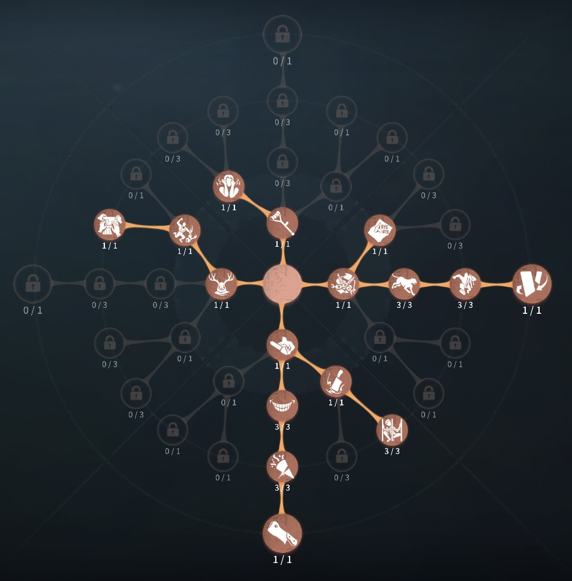
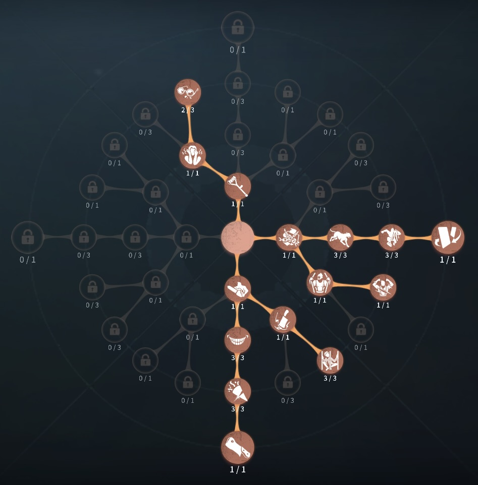

断罪狩人(ベイン)の評価
チェーンクロウでサバイバーを吸い寄せる
外在特質とスキル
特質1:憎しみの重圧
・チェーンクロウでの移動後振動を起こし5秒間6m以内のサバイバーの移動速度を10％、板窓操作8％低下させる。5秒内に再度振動を当てると重ね掛けすることができる。移動速度のみ最大2回まで重ね掛けできる。・チェーンクロウが命中したサバイバーは30秒経過する毎2回まで位置がバレ、そのサバイバーに攻撃すると攻撃回復速度が約20％上昇する。
存在感0：チェーンクロウ、トラバサミ
チェーンクロウ：・チェーンがサバイバーに命中するとそのサバイバーを引き寄せ同時に一定時間移動速度を低下させる。操作中サバイバーにチェーンを当てると恐怖の一撃判定になる。
・チェーンを構えている間は移動速度が5％低下する。
・チェーンが障害物に命中すると自身を障害物に向かって引き寄せる。
・チェーンがフライホイール、マジックステッキ、虫の群れに命中した場合障害物に命中した判定になる。
・最初のチェーンが障害物に命中すると、8秒間であればもう一度チェーンが使用できる。
トラバサミ：
・マップにトラバサミを設置できる。サバイバーがトラバサミに引っかかると8秒間スタンし、解放後5秒間位置がバレるが他のトラバサミに拘束されることはない。
・サバイバーはトラバサミを8秒で解除することができる。
・マップには最大8つのトラバサミが存在でき、上限を超えると古いのものから消滅する。
・地下室やその付近、ロケットチェア拘束時の対象範囲内はトラバサミを設置できず元から設置してあったトラバサミは消滅する。
存在感1：トゲのチェーンクロウ
・チェーンクロウがサバイバーに命中すると0.5ダメージを与えるようになる。恐怖の一撃の場合は1.5ダメージ与える。存在感2：怒りのチェーンクロウ
・チェーンクロウが障害物に命中した後最初の2回は8秒その後は４秒以内に再度チェーンクロウを連続で使用できるようになる。ハンターの立ち回り方
1. 初動の立ち回り
ベインは、チェーンによる攻撃と罠の設置を駆使してサバイバーを追い詰めるハンターです。序盤から強い圧力をかけるため、索敵とスキルの準備が重要になります。
・索敵を優先:
暗号機を巡回しながらサバイバーを発見。
足の速さは標準的なので、マップを素早く回りサバイバーの初動を把握しましょう。
足跡やカラスの飛び立ちを確認し、素早く最初のターゲットを見つけることが大切です。
・チェーンを活用して距離を詰める:
壁や障害物を越えて攻撃できるチェーンを活用。
サバイバーとの距離がある場合でも、チェーンを当てて一気に攻撃のチャンスを作りましょう。
・罠の設置でエリアコントロール:
暗号機・窓・板付近に罠を設置してサバイバーの行動を制限。
サバイバーが暗号機を解読中に罠を仕掛けることで、妨害が可能。
板グルや窓越えが発生しやすい場所に設置することで、逃げ道をふさぐことができます。
2. チェーン攻撃の使い方
ベインの最大の強みは、チェーンによる特殊攻撃です。これを活用することで、通常のハンターよりも素早くダメージを与えることが可能になります。
・引き寄せ攻撃:
チェーンを当てることでサバイバーを引き寄せ、通常攻撃をすぐに当てられます。
板や窓の近くで使うと、サバイバーの移動を制限できます。
・障害物を活かした攻撃:
窓枠や板越しにチェーンを当てることで、逃げ道を塞げます。
角を曲がる際など、サバイバーが見えづらい場所でも当てられるよう練習しておきましょう。
3. チェイス中の立ち回り
ベインのチェイスは、通常攻撃とチェーン攻撃の組み合わせが鍵となります。
・板・窓での攻撃:
サバイバーが板を倒す瞬間や窓を越える瞬間にチェーンを当てると、有利に立ち回れる。
板グルをするサバイバーに対しては、無理に追いかけずチェーンで圧をかけて逃げ場を減らしましょう。
・罠を活用したチェイス:
板の前や窓枠に罠を設置し、サバイバーが強ポジションに逃げるのを防ぐ。
罠にかかったサバイバーは行動が制限されるため、チェーン攻撃や通常攻撃のチャンスが増えます。
・チェーンのクールタイムを意識:
無駄撃ちせず、確実に当てられるタイミングで使用。
チェーンを外した後はクールタイムがあるため、次の攻撃までの間合い管理を意識しましょう。
4. ゲートや暗号機前での立ち回り
・暗号機巡回:
チェーンを使って移動を短縮し、暗号機を迅速に巡回しましょう。
解読中のサバイバーに遠距離からチェーンを当てることで、即座に圧をかけられます。
罠を暗号機周辺に仕掛けることで、解読妨害が可能
・ゲート封鎖:
ゲート開門前にポジションを確保し、チェーンで脱出を阻止。
サバイバーがゲートへ向かう際にチェーンを当てれば、一気に形勢逆転が可能です。
ゲート付近に罠を設置することで、脱出しようとするサバイバーを足止めできる
5. 注意点
チェーン攻撃の精度を上げる →
練習を重ねて、確実に当てられるようにしましょう。
罠の設置場所を工夫する →
効果的な位置に罠を置くことで、サバイバーの動きを大きく制限できます。
暗号機管理を意識する →
足が遅めなので、サバイバーに自由に解読させないよう立ち回りましょう。
おすすめの内在人格
裏向きカード幽閉の恐怖型人格
この内在人格は、コントロールに振ることで、見捨てされやすい断罪狩人の弱点を補い、幽閉の恐怖でゲート開門速度を遅らした人格（見捨て＝サバイバーが救助に行かないこと）

裏向きカード中毒症型人格
この内在人格は、コントロールに振ることで、見捨てされやすい断罪狩人の弱点を補い、中毒症でダブルチェイスを警戒、狂暴で攻撃回復速度をはやめた人格（見捨て＝サバイバーの救助に行かないこと）


みんなのコメント